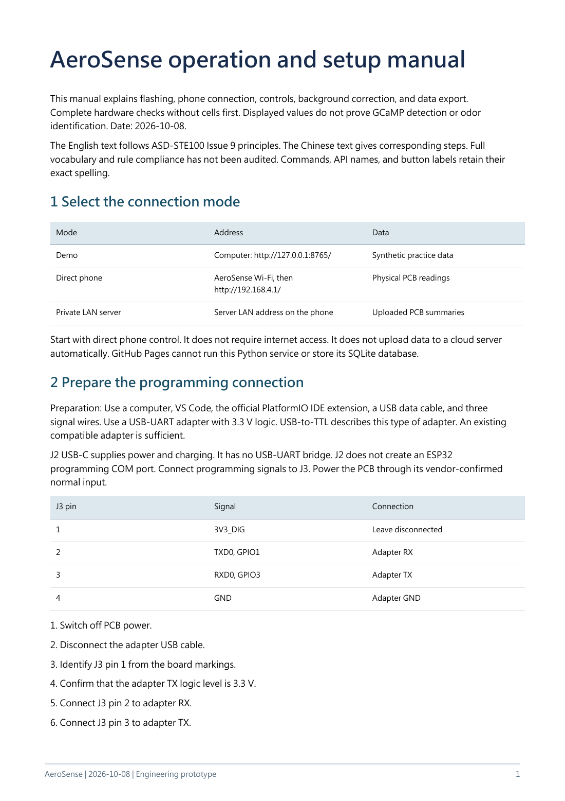
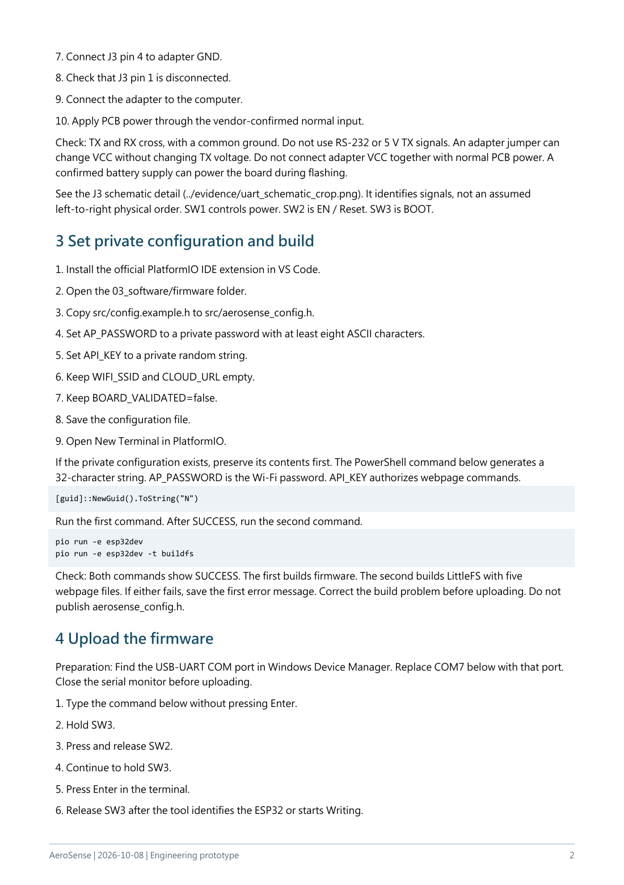
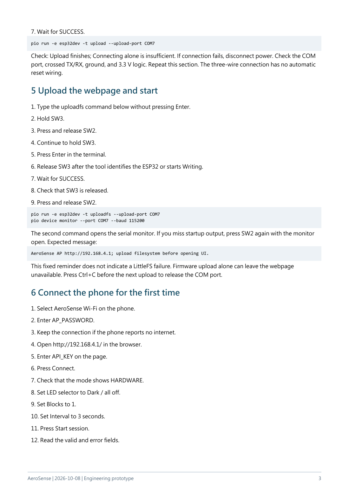
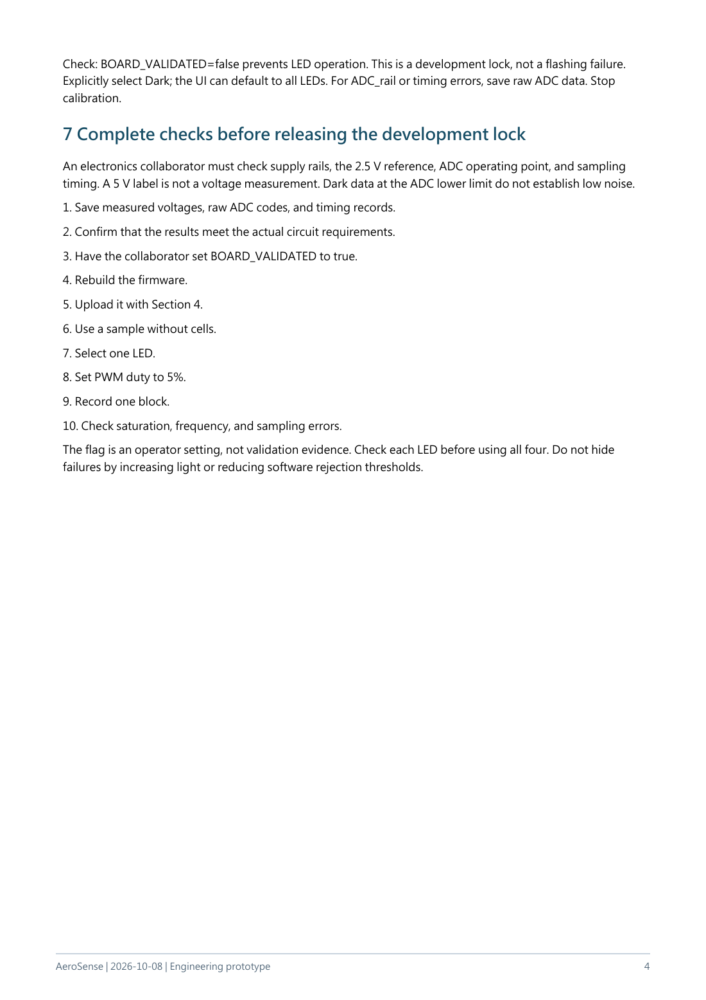
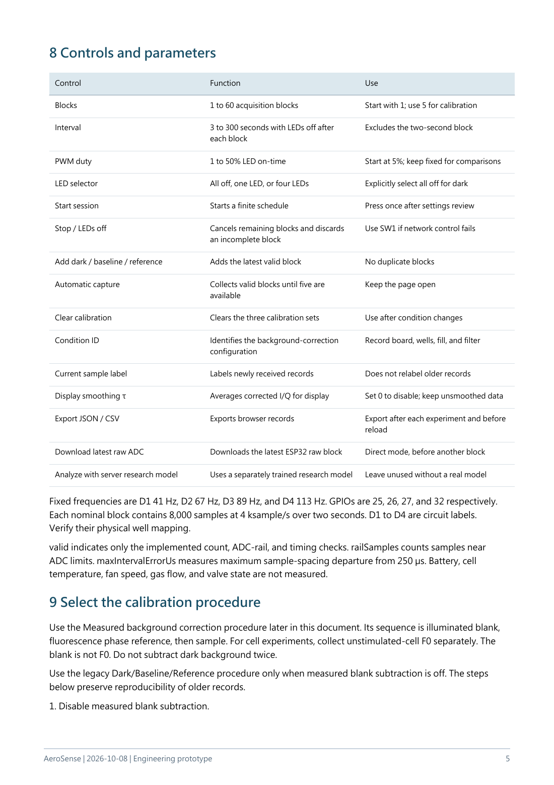
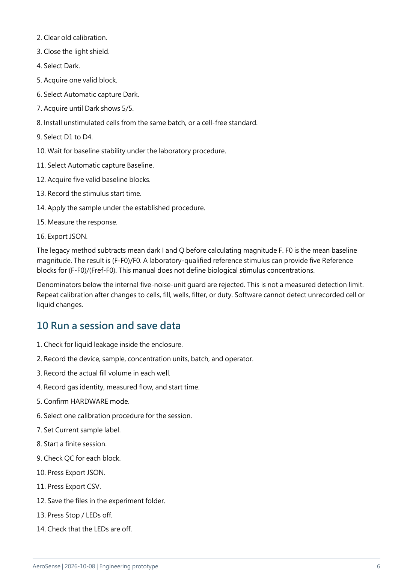
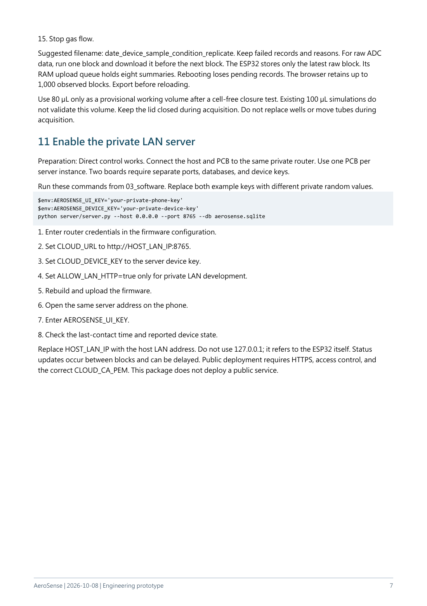
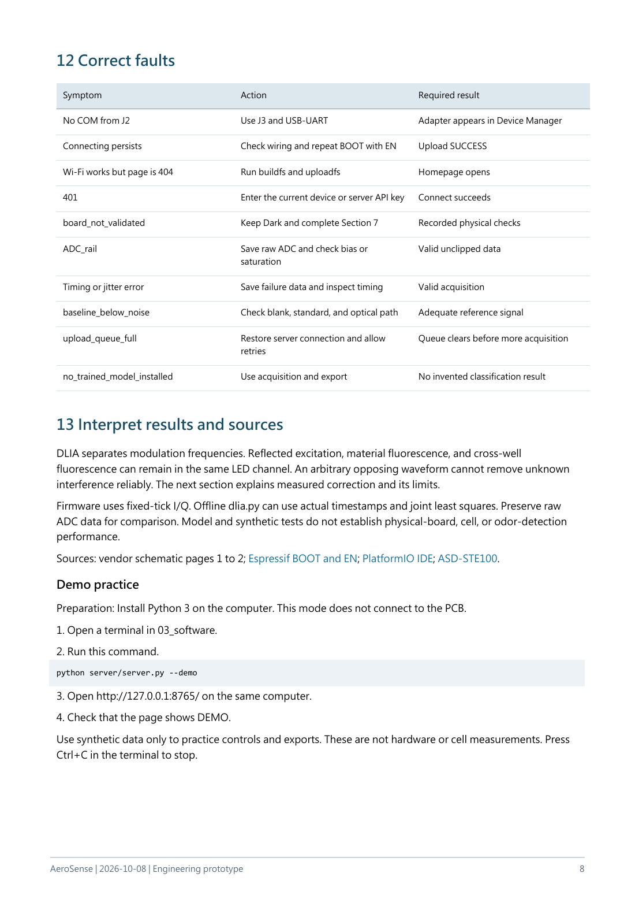
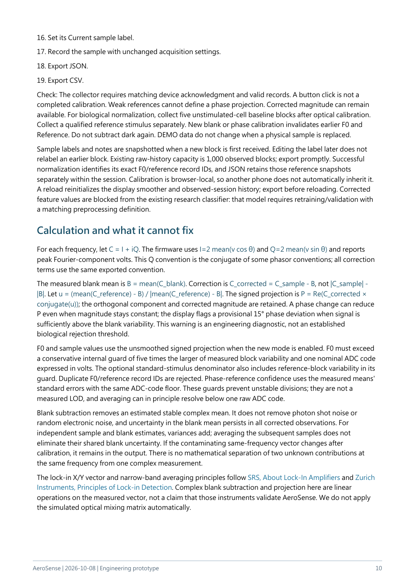
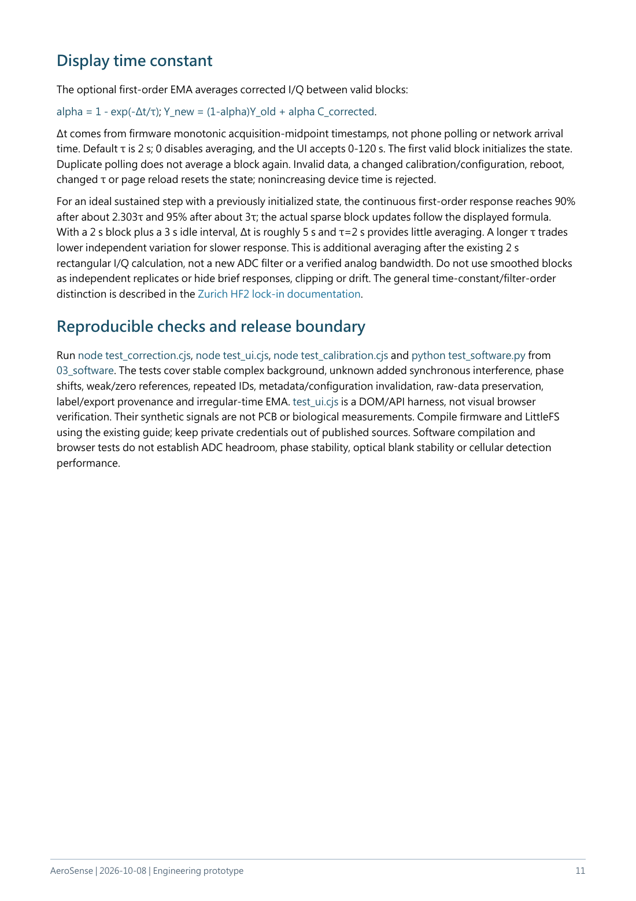

Page 1 of 11
Back to page navigation
Read extracted page text
Text extracted from the source PDF. Equations and table layout are best checked against the page image or original PDF.
AeroSense | 2026-10-08 | Engineering prototype 1 AeroSense operation and setup manual This manual explains flashing, phone connection, controls, background correction, and data export. Complete hardware checks without cells first. Displayed values do not prove GCaMP detection or odor identification. Date: 2026-10-08. The English text follows ASD-STE100 Issue 9 principles. The Chinese text gives corresponding steps. Full vocabulary and rule compliance has not been audited. Commands, API names, and button labels retain their exact spelling. 1 Select the connection mode Mode Address Data Demo Computer: http://127.0.0.1:8765/ Synthetic practice data Direct phone AeroSense Wi-Fi, then http://192.168.4.1/ Physical PCB readings Private LAN server Server LAN address on the phone Uploaded PCB summaries Start with direct phone control. It does not require internet access. It does not upload data to a cloud server automatically. GitHub Pages cannot run this Python service or store its SQLite database. 2 Prepare the programming connection Preparation: Use a computer, VS Code, the official PlatformIO IDE extension, a USB data cable, and three signal wires. Use a USB-UART adapter with 3.3 V logic. USB-to-TTL describes this type of adapter. An existing compatible adapter is sufficient. J2 USB-C supplies power and charging. It has no USB-UART bridge. J2 does not create an ESP32 programming COM port. Connect programming signals to J3. Power the PCB through its vendor-confirmed normal input. J3 pin Signal Connection 1 3V3_DIG Leave disconnected 2 TXD0, GPIO1 Adapter RX 3 RXD0, GPIO3 Adapter TX 4 GND Adapter GND 1. Switch off PCB power. 2. Disconnect the adapter USB cable. 3. Identify J3 pin 1 from the board markings. 4. Confirm that the adapter TX logic level is 3.3 V. 5. Connect J3 pin 2 to adapter RX. 6. Connect J3 pin 3 to adapter TX.
Page 2 of 11
Back to page navigation
Read extracted page text
Text extracted from the source PDF. Equations and table layout are best checked against the page image or original PDF.
AeroSense | 2026-10-08 | Engineering prototype
2
7. Connect J3 pin 4 to adapter GND.
8. Check that J3 pin 1 is disconnected.
9. Connect the adapter to the computer.
10. Apply PCB power through the vendor-confirmed normal input.
Check: TX and RX cross, with a common ground. Do not use RS-232 or 5 V TX signals. An adapter jumper can
change VCC without changing TX voltage. Do not connect adapter VCC together with normal PCB power. A
confirmed battery supply can power the board during flashing.
See the J3 schematic detail (../evidence/uart_schematic_crop.png). It identifies signals, not an assumed
left-to-right physical order. SW1 controls power. SW2 is EN / Reset. SW3 is BOOT.
3 Set private configuration and build
1. Install the official PlatformIO IDE extension in VS Code.
2. Open the 03_software/firmware folder.
3. Copy src/config.example.h to src/aerosense_config.h.
4. Set AP_PASSWORD to a private password with at least eight ASCII characters.
5. Set API_KEY to a private random string.
6. Keep WIFI_SSID and CLOUD_URL empty.
7. Keep BOARD_VALIDATED=false.
8. Save the configuration file.
9. Open New Terminal in PlatformIO.
If the private configuration exists, preserve its contents first. The PowerShell command below generates a
32-character string. AP_PASSWORD is the Wi-Fi password. API_KEY authorizes webpage commands.
[guid]::NewGuid().ToString("N")
Run the first command. After SUCCESS, run the second command.
pio run -e esp32dev
pio run -e esp32dev -t buildfs
Check: Both commands show SUCCESS. The first builds firmware. The second builds LittleFS with five
webpage files. If either fails, save the first error message. Correct the build problem before uploading. Do not
publish aerosense_config.h.
4 Upload the firmware
Preparation: Find the USB-UART COM port in Windows Device Manager. Replace COM7 below with that port.
Close the serial monitor before uploading.
1. Type the command below without pressing Enter.
2. Hold SW3.
3. Press and release SW2.
4. Continue to hold SW3.
5. Press Enter in the terminal.
6. Release SW3 after the tool identifies the ESP32 or starts Writing.Page 3 of 11
Back to page navigation
Read extracted page text
Text extracted from the source PDF. Equations and table layout are best checked against the page image or original PDF.
AeroSense | 2026-10-08 | Engineering prototype 3 7. Wait for SUCCESS. pio run -e esp32dev -t upload --upload-port COM7 Check: Upload finishes; Connecting alone is insufficient. If connection fails, disconnect power. Check the COM port, crossed TX/RX, ground, and 3.3 V logic. Repeat this section. The three-wire connection has no automatic reset wiring. 5 Upload the webpage and start 1. Type the uploadfs command below without pressing Enter. 2. Hold SW3. 3. Press and release SW2. 4. Continue to hold SW3. 5. Press Enter in the terminal. 6. Release SW3 after the tool identifies the ESP32 or starts Writing. 7. Wait for SUCCESS. 8. Check that SW3 is released. 9. Press and release SW2. pio run -e esp32dev -t uploadfs --upload-port COM7 pio device monitor --port COM7 --baud 115200 The second command opens the serial monitor. If you miss startup output, press SW2 again with the monitor open. Expected message: AeroSense AP http://192.168.4.1; upload filesystem before opening UI. This fixed reminder does not indicate a LittleFS failure. Firmware upload alone can leave the webpage unavailable. Press Ctrl+C before the next upload to release the COM port. 6 Connect the phone for the first time 1. Select AeroSense Wi-Fi on the phone. 2. Enter AP_PASSWORD. 3. Keep the connection if the phone reports no internet. 4. Open http://192.168.4.1/ in the browser. 5. Enter API_KEY on the page. 6. Press Connect. 7. Check that the mode shows HARDWARE. 8. Set LED selector to Dark / all off. 9. Set Blocks to 1. 10. Set Interval to 3 seconds. 11. Press Start session. 12. Read the valid and error fields.
Page 4 of 11
Back to page navigation
Read extracted page text
Text extracted from the source PDF. Equations and table layout are best checked against the page image or original PDF.
AeroSense | 2026-10-08 | Engineering prototype 4 Check: BOARD_VALIDATED=false prevents LED operation. This is a development lock, not a flashing failure. Explicitly select Dark; the UI can default to all LEDs. For ADC_rail or timing errors, save raw ADC data. Stop calibration. 7 Complete checks before releasing the development lock An electronics collaborator must check supply rails, the 2.5 V reference, ADC operating point, and sampling timing. A 5 V label is not a voltage measurement. Dark data at the ADC lower limit do not establish low noise. 1. Save measured voltages, raw ADC codes, and timing records. 2. Confirm that the results meet the actual circuit requirements. 3. Have the collaborator set BOARD_VALIDATED to true. 4. Rebuild the firmware. 5. Upload it with Section 4. 6. Use a sample without cells. 7. Select one LED. 8. Set PWM duty to 5%. 9. Record one block. 10. Check saturation, frequency, and sampling errors. The flag is an operator setting, not validation evidence. Check each LED before using all four. Do not hide failures by increasing light or reducing software rejection thresholds.
Page 5 of 11
Back to page navigation
Read extracted page text
Text extracted from the source PDF. Equations and table layout are best checked against the page image or original PDF.
AeroSense | 2026-10-08 | Engineering prototype 5 8 Controls and parameters Control Function Use Blocks 1 to 60 acquisition blocks Start with 1; use 5 for calibration Interval 3 to 300 seconds with LEDs off after each block Excludes the two-second block PWM duty 1 to 50% LED on-time Start at 5%; keep fixed for comparisons LED selector All off, one LED, or four LEDs Explicitly select all off for dark Start session Starts a finite schedule Press once after settings review Stop / LEDs off Cancels remaining blocks and discards an incomplete block Use SW1 if network control fails Add dark / baseline / reference Adds the latest valid block No duplicate blocks Automatic capture Collects valid blocks until five are available Keep the page open Clear calibration Clears the three calibration sets Use after condition changes Condition ID Identifies the background-correction configuration Record board, wells, fill, and filter Current sample label Labels newly received records Does not relabel older records Display smoothing τ Averages corrected I/Q for display Set 0 to disable; keep unsmoothed data Export JSON / CSV Exports browser records Export after each experiment and before reload Download latest raw ADC Downloads the latest ESP32 raw block Direct mode, before another block Analyze with server research model Uses a separately trained research model Leave unused without a real model Fixed frequencies are D1 41 Hz, D2 67 Hz, D3 89 Hz, and D4 113 Hz. GPIOs are 25, 26, 27, and 32 respectively. Each nominal block contains 8,000 samples at 4 ksample/s over two seconds. D1 to D4 are circuit labels. Verify their physical well mapping. valid indicates only the implemented count, ADC-rail, and timing checks. railSamples counts samples near ADC limits. maxIntervalErrorUs measures maximum sample-spacing departure from 250 µs. Battery, cell temperature, fan speed, gas flow, and valve state are not measured. 9 Select the calibration procedure Use the Measured background correction procedure later in this document. Its sequence is illuminated blank, fluorescence phase reference, then sample. For cell experiments, collect unstimulated-cell F0 separately. The blank is not F0. Do not subtract dark background twice. Use the legacy Dark/Baseline/Reference procedure only when measured blank subtraction is off. The steps below preserve reproducibility of older records. 1. Disable measured blank subtraction.
Page 6 of 11
Back to page navigation
Read extracted page text
Text extracted from the source PDF. Equations and table layout are best checked against the page image or original PDF.
AeroSense | 2026-10-08 | Engineering prototype 6 2. Clear old calibration. 3. Close the light shield. 4. Select Dark. 5. Acquire one valid block. 6. Select Automatic capture Dark. 7. Acquire until Dark shows 5/5. 8. Install unstimulated cells from the same batch, or a cell-free standard. 9. Select D1 to D4. 10. Wait for baseline stability under the laboratory procedure. 11. Select Automatic capture Baseline. 12. Acquire five valid baseline blocks. 13. Record the stimulus start time. 14. Apply the sample under the established procedure. 15. Measure the response. 16. Export JSON. The legacy method subtracts mean dark I and Q before calculating magnitude F. F0 is the mean baseline magnitude. The result is (F-F0)/F0. A laboratory-qualified reference stimulus can provide five Reference blocks for (F-F0)/(Fref-F0). This manual does not define biological stimulus concentrations. Denominators below the internal five-noise-unit guard are rejected. This is not a measured detection limit. Repeat calibration after changes to cells, fill, wells, filter, or duty. Software cannot detect unrecorded cell or liquid changes. 10 Run a session and save data 1. Check for liquid leakage inside the enclosure. 2. Record the device, sample, concentration units, batch, and operator. 3. Record the actual fill volume in each well. 4. Record gas identity, measured flow, and start time. 5. Confirm HARDWARE mode. 6. Select one calibration procedure for the session. 7. Set Current sample label. 8. Start a finite session. 9. Check QC for each block. 10. Press Export JSON. 11. Press Export CSV. 12. Save the files in the experiment folder. 13. Press Stop / LEDs off. 14. Check that the LEDs are off.
Page 7 of 11
Back to page navigation
Read extracted page text
Text extracted from the source PDF. Equations and table layout are best checked against the page image or original PDF.
AeroSense | 2026-10-08 | Engineering prototype 7 15. Stop gas flow. Suggested filename: date_device_sample_condition_replicate. Keep failed records and reasons. For raw ADC data, run one block and download it before the next block. The ESP32 stores only the latest raw block. Its RAM upload queue holds eight summaries. Rebooting loses pending records. The browser retains up to 1,000 observed blocks. Export before reloading. Use 80 µL only as a provisional working volume after a cell-free closure test. Existing 100 µL simulations do not validate this volume. Keep the lid closed during acquisition. Do not replace wells or move tubes during acquisition. 11 Enable the private LAN server Preparation: Direct control works. Connect the host and PCB to the same private router. Use one PCB per server instance. Two boards require separate ports, databases, and device keys. Run these commands from 03_software. Replace both example keys with different private random values. $env:AEROSENSE_UI_KEY='your-private-phone-key' $env:AEROSENSE_DEVICE_KEY='your-private-device-key' python server/server.py --host 0.0.0.0 --port 8765 --db aerosense.sqlite 1. Enter router credentials in the firmware configuration. 2. Set CLOUD_URL to http://HOST_LAN_IP:8765. 3. Set CLOUD_DEVICE_KEY to the server device key. 4. Set ALLOW_LAN_HTTP=true only for private LAN development. 5. Rebuild and upload the firmware. 6. Open the same server address on the phone. 7. Enter AEROSENSE_UI_KEY. 8. Check the last-contact time and reported device state. Replace HOST_LAN_IP with the host LAN address. Do not use 127.0.0.1; it refers to the ESP32 itself. Status updates occur between blocks and can be delayed. Public deployment requires HTTPS, access control, and the correct CLOUD_CA_PEM. This package does not deploy a public service.
Page 8 of 11
Back to page navigation
Read extracted page text
Text extracted from the source PDF. Equations and table layout are best checked against the page image or original PDF.
AeroSense | 2026-10-08 | Engineering prototype 8 12 Correct faults Symptom Action Required result No COM from J2 Use J3 and USB-UART Adapter appears in Device Manager Connecting persists Check wiring and repeat BOOT with EN Upload SUCCESS Wi-Fi works but page is 404 Run buildfs and uploadfs Homepage opens 401 Enter the current device or server API key Connect succeeds board_not_validated Keep Dark and complete Section 7 Recorded physical checks ADC_rail Save raw ADC and check bias or saturation Valid unclipped data Timing or jitter error Save failure data and inspect timing Valid acquisition baseline_below_noise Check blank, standard, and optical path Adequate reference signal upload_queue_full Restore server connection and allow retries Queue clears before more acquisition no_trained_model_installed Use acquisition and export No invented classification result 13 Interpret results and sources DLIA separates modulation frequencies. Reflected excitation, material fluorescence, and cross-well fluorescence can remain in the same LED channel. An arbitrary opposing waveform cannot remove unknown interference reliably. The next section explains measured correction and its limits. Firmware uses fixed-tick I/Q. Offline dlia.py can use actual timestamps and joint least squares. Preserve raw ADC data for comparison. Model and synthetic tests do not establish physical-board, cell, or odor-detection performance. Sources: vendor schematic pages 1 to 2; Espressif BOOT and EN; PlatformIO IDE; ASD-STE100. Demo practice Preparation: Install Python 3 on the computer. This mode does not connect to the PCB. 1. Open a terminal in 03_software. 2. Run this command. python server/server.py --demo 3. Open http://127.0.0.1:8765/ on the same computer. 4. Check that the page shows DEMO. Use synthetic data only to practice controls and exports. These are not hardware or cell measurements. Press Ctrl+C in the terminal to stop.
Page 9 of 11
Back to page navigationRead extracted page text
Text extracted from the source PDF. Equations and table layout are best checked against the page image or original PDF.
AeroSense | 2026-10-08 | Engineering prototype 9 Measured background correction and display averaging The new path subtracts a measured illuminated blank in I/Q space. It does not add an arbitrary counter-waveform or promise to remove unknown same-frequency interference. ESP32 firmware still exports untouched raw I, Q and magnitude; the browser performs correction and retains both corrected and original records. Nothing has been flashed or validated on a physical board by these software tests. What the three controls mean Control Preparation and purpose Illuminated blank Nonfluorescent, cell-free blank at the same fill, wells, filter, duty and optical assembly. All four LEDs run. Measures repeatable electronic plus optical background. It already contains dark background. Fluorescence phase reference A stable fluorescence standard under the same acquisition/optical conditions. Its blank-subtracted mean defines each channel's reference direction. It does not calibrate concentration or establish GCaMP sensitivity. Living-cell F0 Unstimulated cells under the intended experiment conditions. Collected separately after optical calibration, for ΔF/F0. Do not subtract this as unwanted background. Dark-only blocks remain useful for first-board ADC/timing checks. The new correction path subtracts the illuminated blank once, without subtracting dark again. The older dark-only normalization remains available while measured correction is off. Short operating sequence 1. Complete the power, ADC, and timing checks in the operation manual. 2. Connect the phone UI. 3. Enter a Condition ID for the board, wells, fill, filter, and duty. 4. Install a cell-free nonfluorescent blank with the intended fill volume. 5. Set Current sample label to B_CAL. 6. Press 1. Collect illuminated blank. 7. Keep the page open until five valid blank blocks are collected. 8. Install a stable fluorescence standard. 9. Set Current sample label to PHASE_REF. 10. Press 2. Collect fluorescence phase reference. 11. Wait for five valid reference blocks. 12. Check the channel reference status. 13. Select 3. Enable measured blank subtraction. 14. Set Display smoothing τ to 0 for the initial comparison. 15. Install the test sample.
Page 10 of 11
Back to page navigation
Read extracted page text
Text extracted from the source PDF. Equations and table layout are best checked against the page image or original PDF.
AeroSense | 2026-10-08 | Engineering prototype 10 16. Set its Current sample label. 17. Record the sample with unchanged acquisition settings. 18. Export JSON. 19. Export CSV. Check: The collector requires matching device acknowledgment and valid records. A button click is not a completed calibration. Weak references cannot define a phase projection. Corrected magnitude can remain available. For biological normalization, collect five unstimulated-cell baseline blocks after optical calibration. Collect a qualified reference stimulus separately. New blank or phase calibration invalidates earlier F0 and Reference. Do not subtract dark again. DEMO data do not change when a physical sample is replaced. Sample labels and notes are snapshotted when a new block is first received. Editing the label later does not relabel an earlier block. Existing raw-history capacity is 1,000 observed blocks; export promptly. Successful normalization identifies its exact F0/reference record IDs, and JSON retains those reference snapshots separately within the session. Calibration is browser-local, so another phone does not automatically inherit it. A reload reinitializes the display smoother and observed-session history; export before reloading. Corrected feature values are blocked from the existing research classifier: that model requires retraining/validation with a matching preprocessing definition. Calculation and what it cannot fix For each frequency, let C = I + iQ. The firmware uses I=2 mean(v cos θ) and Q=2 mean(v sin θ) and reports peak Fourier-component volts. This Q convention is the conjugate of some phasor conventions; all correction terms use the same exported convention. The measured blank mean is B = mean(C_blank). Correction is C_corrected = C_sample - B, not |C_sample| - |B|. Let u = (mean(C_reference) - B) / |mean(C_reference) - B|. The signed projection is P = Re(C_corrected × conjugate(u)); the orthogonal component and corrected magnitude are retained. A phase change can reduce P even when magnitude stays constant; the display flags a provisional 15° phase deviation when signal is sufficiently above the blank variability. This warning is an engineering diagnostic, not an established biological rejection threshold. F0 and sample values use the unsmoothed signed projection when the new mode is enabled. F0 must exceed a conservative internal guard of five times the larger of measured block variability and one nominal ADC code expressed in volts. The optional standard-stimulus denominator also includes reference-block variability in its guard. Duplicate F0/reference record IDs are rejected. Phase-reference confidence uses the measured means' standard errors with the same ADC-code floor. These guards prevent unstable divisions; they are not a measured LOD, and averaging can in principle resolve below one raw ADC code. Blank subtraction removes an estimated stable complex mean. It does not remove photon shot noise or random electronic noise, and uncertainty in the blank mean persists in all corrected observations. For independent sample and blank estimates, variances add; averaging the subsequent samples does not eliminate their shared blank uncertainty. If the contaminating same-frequency vector changes after calibration, it remains in the output. There is no mathematical separation of two unknown contributions at the same frequency from one complex measurement. The lock-in X/Y vector and narrow-band averaging principles follow SRS, About Lock-In Amplifiers and Zurich Instruments, Principles of Lock-in Detection. Complex blank subtraction and projection here are linear operations on the measured vector, not a claim that those instruments validate AeroSense. We do not apply the simulated optical mixing matrix automatically.
Page 11 of 11
Back to page navigation
Read extracted page text
Text extracted from the source PDF. Equations and table layout are best checked against the page image or original PDF.
AeroSense | 2026-10-08 | Engineering prototype 11 Display time constant The optional first-order EMA averages corrected I/Q between valid blocks: alpha = 1 - exp(-Δt/τ); Y_new = (1-alpha)Y_old + alpha C_corrected. Δt comes from firmware monotonic acquisition-midpoint timestamps, not phone polling or network arrival time. Default τ is 2 s; 0 disables averaging, and the UI accepts 0-120 s. The first valid block initializes the state. Duplicate polling does not average a block again. Invalid data, a changed calibration/configuration, reboot, changed τ or page reload resets the state; nonincreasing device time is rejected. For an ideal sustained step with a previously initialized state, the continuous first-order response reaches 90% after about 2.303τ and 95% after about 3τ; the actual sparse block updates follow the displayed formula. With a 2 s block plus a 3 s idle interval, Δt is roughly 5 s and τ=2 s provides little averaging. A longer τ trades lower independent variation for slower response. This is additional averaging after the existing 2 s rectangular I/Q calculation, not a new ADC filter or a verified analog bandwidth. Do not use smoothed blocks as independent replicates or hide brief responses, clipping or drift. The general time-constant/filter-order distinction is described in the Zurich HF2 lock-in documentation. Reproducible checks and release boundary Run node test_correction.cjs, node test_ui.cjs, node test_calibration.cjs and python test_software.py from 03_software. The tests cover stable complex background, unknown added synchronous interference, phase shifts, weak/zero references, repeated IDs, metadata/configuration invalidation, raw-data preservation, label/export provenance and irregular-time EMA. test_ui.cjs is a DOM/API harness, not visual browser verification. Their synthetic signals are not PCB or biological measurements. Compile firmware and LittleFS using the existing guide; keep private credentials out of published sources. Software compilation and browser tests do not establish ADC headroom, phase stability, optical blank stability or cellular detection performance.